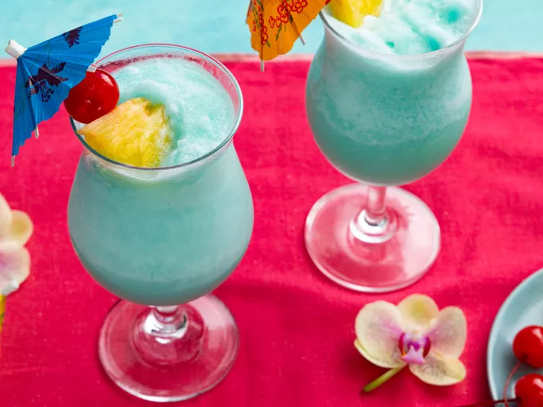

Home
Document
Blue Hawaiian Cocktail

Description
The Blue Hawaiian is a fun, refreshing cocktail made with rum, cream of coconut, pineapple juice, and Curacao liqueur to create its legendary blue color. Invented in Hawaii in the 1950s, this tiki cocktail will have you crooning like Elvis!
Ingredients
- 1 cup crushed ice
- 2 fluid ounced pineapple juice
- 1 fluid ounce light rum
- 1 fluid ounce blue Curacao liqueur
- 1 fluid ounce cream of coconut
- 1 pineapple slice for garnish
- 1 maraschino cherry for garnish
Directions
- Combine crushed ice, pineapple juice, rum, blue Curacao, and cream of coconut in a blender.
- Blend on high speed until smooth and an even blue color.
- Pour into a chilled highball glass. Garnish with a slice of pineapple and a maraschino cherry.